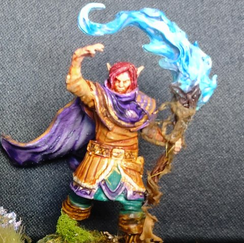

Ochlus, le dieu de la poésie

- Dieu de la poésie et de la paresse.
- Chargé par Wayland de porter les quatre gemmes à Kylima, il tombe amoureux d'elle, garde les gemmes et lui déclare sa flamme. De leur union naissent les premiers elfes.
- Wayland l'enferme sous le volcan Kiriadum. Chaque première pleine lune d'hiver, le Vin de Vanaël est versé sur la montagne ; en retour, Ochlus apprend leurs plus beaux chants aux oiseaux.
- Privé du vin, il met son pouvoir dans les quatre gemmes et les fait remonter à la surface. Les nains les trouvent et les vendent au prince Leodegar.
- Campagne : quand les héros versent le Vin de Vanaël dans le Kiriadum, un chant monte des profondeurs, repris par une foule d'oiseaux. Les héros le rencontrent ensuite dans le passé, encore ami de Wayland, et jouent les entremetteurs entre lui, Wayland et Kylima.